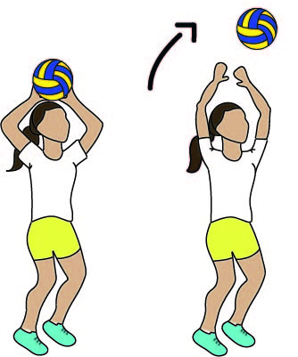
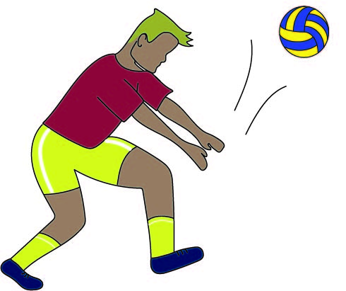

Levantamento com toque

Levantamento com manchete
Esse movimento pode ser feito por meio da manchante ou das maõs. O levantamento consiste em um jogador levantar a bola proximo da rede para que o atacante do time possa realizar o movimento de ataque.